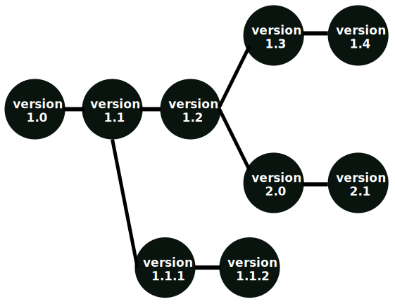

Project scheduling involves organizing tasks efficiently in software projects. Here are the key steps a software project manager follows:
The first step in scheduling a software project is to list all the activities needed to finish the
project. Knowing the project details and development process helps managers identify these key
activities. Next, these activities are divided into smaller, logical parts called tasks. Tasks are then
assigned to different developers.
Once tasks are divided, the project manager identifies dependencies among them. Dependencies determine
the order of task execution. For example, if Task A needs Task B's results, Task A must be scheduled
after Task B because it depends on Task B.
Effective project scheduling is guided by several fundamental principles that help organize and manage tasks efficiently. These principles ensure that projects are broken down into manageable parts, tasks are assigned appropriately, dependencies are identified, and progress is tracked through defined milestones. Here are the key principles:
Managing people and effort is crucial in software development. One common misconception among managers is the belief that adding more programmers can compensate for falling behind schedule. However, the reality is more nuanced. Software engineering deals with the dynamics between people and effort management during the product development phase. Here are some key points to consider:
It's important to balance team size and project complexity to ensure efficient progress and timely completion.
The task network, also known as the activity network, plays a crucial role in meeting project deadlines in software development. It is a graphical representation of the flow of tasks within a project, highlighting major software engineering activities. The task network diagram helps identify the critical path and project duration.
An activity network outlines the various activities in a project, their estimated durations, and their dependencies on each other. There are two common representations for activity networks:
Project scheduling involves defining start and end dates for individual tasks, along with allocating resources within a budget. It focuses specifically on tasks, their deadlines, and project dependencies.
When creating a software project schedule, the process starts with defining a set of tasks (known as the work breakdown structure). Tasks may also be assigned to specific individuals. Based on this information, a time-line chart, commonly known as a Gantt chart, is generated. This chart can cover the entire project duration or be segmented into charts for different project functions or individuals involved in the project.
Using time-line charts or Gantt charts aids in visualizing project timelines, task dependencies, resource allocation, and individual responsibilities.
A PERT chart, also known as a PERT diagram, is a tool used to schedule and organize tasks within a project. PERT stands for Program Evaluation and Review Technique. It provides a visual representation of a project's timeline. These charts are similar to Gantt charts but are structured differently.
Example PERT Formula Calculation: If the optimistic time for a task is 30 minutes, the pessimistic time is 60 minutes, and the most likely time is 45 minutes, the PERT formula would be: (30 min + (4 × 45 min) + 60 min) ÷ 6 = 45 minutes.
Software project managers select their project team members, aiming to identify skilled software developers crucial for project success. Good developers enhance team productivity, while poor ones can reduce it significantly. Staffing is the process of managing human capital, the organization's most important resource, encompassing possession, retention, promotion, and compensation.
The configuration of software refers to the state of all project deliverables at any given time. Software configuration management (SCM) is responsible for controlling the configuration of software throughout its life cycle. The deliverables of software projects include various objects like source code, design documents, SRS documents, test documents, user manuals, etc., which are modified by multiple developers, leading to new revisions and versions.
Objects are classified into controlled, precontrolled, and uncontrolled categories. Controlled objects are under configuration control, precontrolled objects will be controlled later, and uncontrolled objects are not subject to control. Controllable objects include requirements specifications, design documents, tools, source code, test cases, and problem reports.
Software projects often involve multiple contributors, continuous updates, and various versions, branches, and authors. Geographically distributed teams working concurrently also require effective management. SCM is necessary to accommodate changes in user requirements, policies, budgets, and schedules.
Software Configuration Management (SCM) is crucial for managing and controlling the evolution of software products. Below are some of the key benefits of using SCM:
Overall, SCM enhances the efficiency, quality, and reliability of the software development process.
Software Configuration Management (SCM) is a structured approach that ensures control and management of software products throughout their lifecycle. The SCM process involves several key activities that contribute to the efficient development and maintenance of software systems.
This step focuses on identifying and establishing configuration items (CIs) from software products. CIs can include various elements such as design documents, source code files, test scripts, and configuration files. Proper identification is crucial for managing these items effectively.
For example:
This activity involves creating versions or specifications of existing software products. Version control systems track changes made to files over time, allowing developers to work collaboratively while ensuring the integrity of the software.
Change control is essential for managing modifications to configuration items. It includes processes for requesting, evaluating, approving, and implementing changes while maintaining consistency and avoiding conflicts within the software system.
Configuration auditing involves technical reviews to verify the correctness, completeness, and consistency of modified configuration objects. Audits ensure that the software configuration aligns with project requirements and standards.
Reporting provides stakeholders with accurate status updates and current configuration data. Documentation such as admin guides, user guides, FAQs, release notes, and installation guides facilitate communication and transparency throughout the software development process.
Setting up the right infrastructure is crucial for efficient, organized, and quality-oriented software development projects. The following steps outline key aspects of infrastructure setup:
The test environment is where the project is thoroughly tested. All modules are assembled here to ensure they work properly. This environment is dynamic and subject to frequent changes, so having a dedicated test environment is essential for successful software development.
This environment is used for staging the application and conducting quality assurance testing. It allows project managers to demonstrate the project/product to stakeholders at different stages of production.
Developers set up an isolated environment to test the user interface behavior and design. This ensures that the user interface functions as intended.
Setting up a pipeline for automatic build, test, and deployment is crucial. When developers make changes, this pipeline automatically triggers responses such as building the product, running automated tests, and deploying the code. This process saves time and reduces errors.
For web-based projects, a basic model page is created to communicate design guidelines, brand definitions, and other standards. This page serves as a model for subsequent pages and establishes the connection between the web front end, service middle tier, and database backend.
A software development team plays a crucial role in designing, building, testing, deploying, and maintaining software products or services. Team training is essential for introducing new business software, addressing common training needs, enhancing customer service, and promoting technical skills.
Seek feedback from your team to identify areas where they require more experience or training. Their input can guide the type of training needed.
Create a training schedule that aligns with department activities. Ensure that the team has adequate time to learn new skills without disrupting critical workdays.
Develop lesson plans for each training session, including lectures, group activities, presentations, and other educational components to enhance team knowledge.
Keep the team engaged during training by varying the learning format. Combine lecture-style presentations with interactive group discussions and activities.
Document key talking points, questions answered, and topics covered in each training session to ensure that important information is retained.
Conduct tests or quizzes to assess the team's understanding and learning progress. Use the results to gauge the success of the training session.
After training concludes, evaluate its success by measuring the performance levels of individual participants. You can also gather feedback through surveys to improve future training sessions.
Software maintenance is a continuous process that occurs throughout the entire life cycle of a software system. The goal of software maintenance is to keep the software system working correctly, efficiently, and securely. This includes fixing bugs, adding new features, improving performance, and updating the software to work with new hardware or software systems.
It is crucial to have a well-defined maintenance process. Software maintenance can be costly and complex, especially for large and complex systems. Therefore, the cost and effort of maintenance should be taken into account during the planning phase of a software project. A clear and well-defined maintenance plan should include regular activities such as testing, backup, and bug fixing.
The process of finding and fixing errors and problems in the software.
Adding new features or improving existing features.
Improving the speed, efficiency, and reliability of the software.
Adapting the software to run on new hardware or software platforms.
Improving the design and architecture of the software to make it more maintainable and scalable.
Creating, updating, and maintaining documentation such as user manuals, technical specifications, and design documents.
Fixing errors and bugs in the software.
Modifying the software system to adapt it to changes in the environment, such as changes in hardware or software, government policies, and business rules.
Improving functionality, performance, and reliability, and restructuring the software system.
Taking measures to prevent future problems, and implementing preventive measures such as backups.
Maintenance can be categorized into proactive and reactive types. Proactive maintenance involves taking preventive measures to avoid problems from occurring, while reactive maintenance involves addressing problems that have already occurred.
System retirement, also known as applications decommissioning, is the process of shutting down jobless or obsolete business applications. This process does not affect a company's primary systems and data but focuses on retiring redundant software to reduce operational costs, enhance system performance, and optimize resources.
Changes in technology may render old applications obsolete, necessitating their retirement.
Evolution in business processes may make certain applications redundant, leading to their retirement.
Outdated applications often incur high maintenance costs, making retirement a cost-effective solution.
Obsolete applications may pose security risks due to lack of updates and support, prompting their retirement.
Analyze existing software and create a retirement plan.
Develop a migration strategy for a smooth transition from legacy systems to new systems.
Involve key stakeholders to gather insights, address concerns, and ensure a successful transition.
Test migration tools and estimate the impact of retirement on business operations.
Notify users of the upcoming retirement and facilitate their migration to new systems.
Properly archive existing data, code, documentation, and system artifacts for potential future restoration.
Take a complete backup of the system before initiating the retirement process.
In configuration management, a baseline is an agreed description of the attributes of a product at a specific point in time. This baseline serves as a basis for defining changes, where a change represents a movement from the baseline state to a subsequent state.
A baseline can be established to mark an approved configuration item, which may refer to a single work product or a set of work products used as a logical basis.
In many environments, baselines are controlled to either permit or prohibit certain subsequent activities against work products. These activities are selected, controlled, and sometimes monitored depending on the configuration management system.
Configuration audits associated with baselines may include:
The purpose of baseline control and audits is to ensure that the configuration items are managed effectively and that changes are appropriately evaluated and approved.
Interfaces serve as points of communication between different components within an application or system. They define interactions between hardware, software, and users, facilitating seamless functionality and communication.
Developers use interfaces as tools to enable interaction between various system components, ensuring efficient communication and data exchange. Interfaces also play a crucial role in allowing users to interact with hardware devices and software programs.
1. Hardware Interfaces:
2. Software Interfaces:
3. User Interfaces:
Each type of interface plays a crucial role in system functionality, facilitating communication, control, and user interaction within software and hardware environments.
A change request is a formal proposal to alter the functionality or scope of a project. Managing change requests involves several steps to ensure proper evaluation and decision-making.
Communication throughout this process is crucial, ensuring stakeholders are informed of decisions and reasons for approval or rejection. Effective change management helps maintain project alignment with business goals and ensures changes are implemented smoothly and efficiently.
Software configuration management involves automating maintenance tasks to ensure proper software functionality and performance. A configuration control tool plays a crucial role in managing these tasks effectively.
These tools enhance productivity, streamline processes, ensure version control, and facilitate collaboration among development teams. Choosing the right combination of configuration control tools is essential for efficient software development and maintenance.